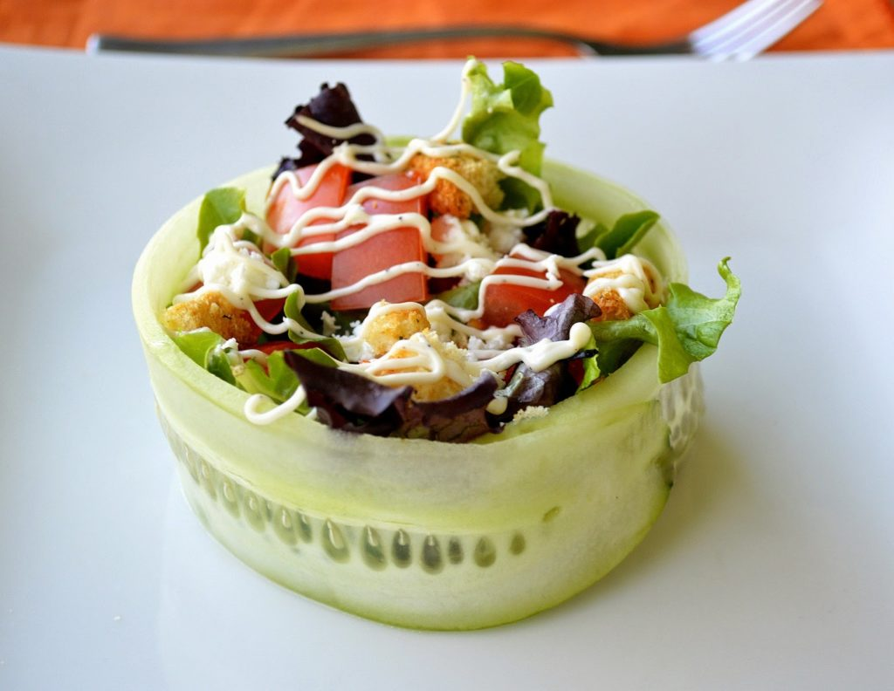

The Cucko Salad

- 2 large cucumbers
- 1 cup cherry tomatoes, halved
- 1/2 cup feta cheese, crumbled
- 1/4 cup Kalamata olives, pitted and chopped
- 1/4 cup red onion, thinly sliced
- 1/4 cup fresh basil leaves
- 1/4 cup extra virgin olive oil
- 2 tbsp red wine vinegar
- Salt and pepper to taste
-
Using a vegetable peeler, peel the cucumbers lengthwise to create long
strips (discard the first strip with seeds).
-
In a bowl, combine cherry tomatoes, feta cheese, Kalamata olives, red
onion, and basil leaves.
-
Whisk together olive oil, red wine vinegar, salt, and pepper in a
small bowl.
-
Lay out cucumber strips flat. Spoon the salad mixture evenly onto each
cucumber strip.
-
Roll up the cucumber strips tightly, securing with toothpicks if
needed.
- Arrange the cucumber wraps on a serving platter.
- Drizzle with remaining dressing and serve chilled.